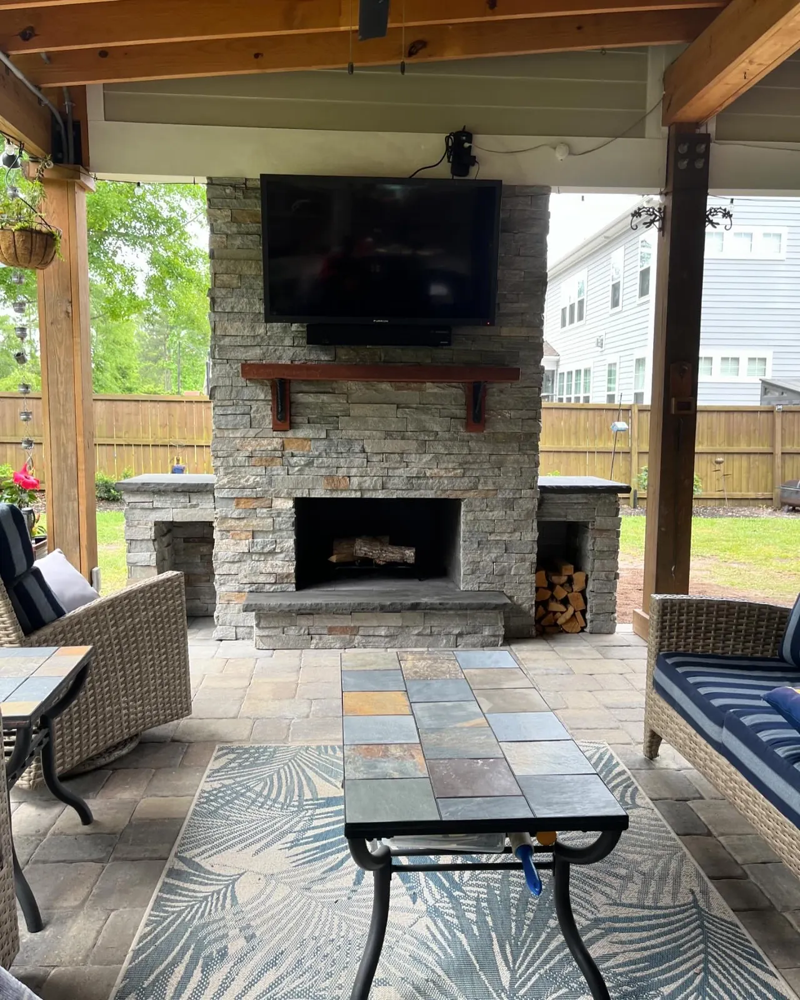

Outdoor Fireplaces in Charleston, SC

Outdoor Fireplaces Why Build a Fireplace Instead of a Fire Pit
An outdoor fireplace does something a fire pit cannot. It stands up, so it throws heat at you instead of past you, it makes a statement at the end of a patio, and it can act as a screen wall — blocking a view, a neighbor or a prevailing wind while it does the rest.
It is also the natural centrepiece when it is built into a pavilion.
We build the whole thing in-house, footing to flue, with our own masonry, gas and electrical crews. Doug and Zach Cramer see every job before it is quoted.
What an Outdoor Fireplace Costs
| Fireplace kit | from $8,000 |
|---|---|
| Custom-built fireplace | $20,000 and up |
What moves the number: size, height, the material, and whether it burns gas or wood. Every quote follows a consultation at your home.
Height is the cost driver people underestimate. A fireplace that looks right under a tall pavilion ceiling is a much bigger masonry structure than one against a low wall, and the chimney has to carry all the way up.
If your budget is nearer $2,500 than $20,000, build a fire pit instead and put the money into the patio around it. A fire pit suits smaller yards and sits in the middle of the space. A fireplace needs the room to stand against something.

Stone, Stucco, Brick — or Something Smoother
Most of our fireplaces are stone, stucco or brick. Which one is usually settled by the house: the fireplace should look like it belongs to the architecture rather than arriving from a different project.
We also finish in microcement and specialised lime plasters, which give a smooth, seamless, modern face instead of a jointed one. Those same finishes work on outdoor kitchens, so a kitchen and fireplace on the same patio can be finished to match.
Gas or Wood, and Why We Fit a Blower Either Way
Wood burning is great for people who want the experience — the fire itself, the smell, the ritual of it. It costs more, because it needs a real chimney, and it is higher maintenance once it is built.
Gas is low maintenance and lights when you want it.
Either way we fit a blower. Without one, an outdoor fireplace sends most of its heat straight up the flue and you feel surprisingly little of it two chairs away. The blower pushes the hot air out into the space so you actually get warmth off it. It is the difference between a fireplace that looks good and one you sit in front of in January.
Smoke is only a real problem when a fire sits under a structure — and then it needs a chimney, which is exactly what a fireplace has and a fire pit does not. That is why a fireplace, not a fire pit, is what goes inside a covered pavilion.
How We Build Yours
- Consultation. Where it stands, what it screens, and how the patio works around it.
- Design and materials. Height and proportion first, then stone, stucco, brick, microcement or lime plaster.
- Gas or wood, with the chimney sized for it and the blower specified either way.
- Permits and HOA paperwork where they apply. We prepare and submit those.
- We build it — footing, masonry, flue and finish — with our own crews running the gas and electrical.
Fireplaces are usually part of something larger: a pavilion, an outdoor kitchen, or a patio built to hold all three. For the smaller, movable version of the same idea, see custom fire pits.
Areas We Serve
Cramers Landscaping provides its services throughout:
We build outdoor fireplaces and fire pits in Charleston, SC throughout Charleston County, including Charleston, Mount Pleasant, West Ashley, Summerville, Folly Beach, and Sullivan’s Island.
Projects We’ve Built
Real jobs, with the story of how each one came together.


Frequently Asked Questions
How much does an outdoor fireplace cost in Charleston?
A fireplace kit starts around $8,000. Custom builds run $20,000 and up. Size, height, the material and whether it burns gas or wood are what move the number.
Should I build an outdoor fireplace or a fire pit?
Both give heat. A fire pit suits smaller yards and works sitting toward the middle of the patio, and starts far cheaper. With the space, a fireplace makes more of a statement, can act as a screen wall, and is what belongs inside a covered pavilion because it has a chimney.
Gas or wood burning outdoor fireplace?
Wood burning is great if you want the experience, but it needs a real chimney, costs more and is higher maintenance. Gas is low maintenance. Either way we fit a blower, because without one most of the heat goes up the flue instead of out to where you are sitting.
What are outdoor fireplaces built from?
Stone, stucco or brick for most of ours. We also finish in microcement and specialised lime plasters for a smooth modern face, and those same finishes work on outdoor kitchens so the two can match.
Can an outdoor fireplace go inside a pavilion?
Yes, and that is one of the best places for one. Smoke only becomes a problem when a fire is under a structure without a chimney, and a fireplace has one. We build the pavilion and the fireplace together so the flue and the framing are planned as one job.
Get in Touch Ready to Transform Your Landscape?
If you’re searching for a landscaping company in Charleston that delivers expertise, reliability, and long-term value, Cramers Landscaping is here to help. Tell us what you have in mind and we’ll put a quote together for it. The consultation at your home is free around Charleston, Mount Pleasant and Summerville. For Kiawah, Seabrook, Wadmalaw and Awendaw, or anywhere else more than an hour from Charleston or Summerville, there’s a charge for the proposal trip. It comes off the price if you go ahead with the build, and it is not refundable if you do not.
Based In
9153 Markleys Grove Blvd, Summerville, SC
We come to you. There is no office or showroom to visit.
Phone
Hours
Monday – Friday: 8:00 AM – 5:00 PM
Saturday: 9:00 AM – 2:00 PM
Sunday: Closed